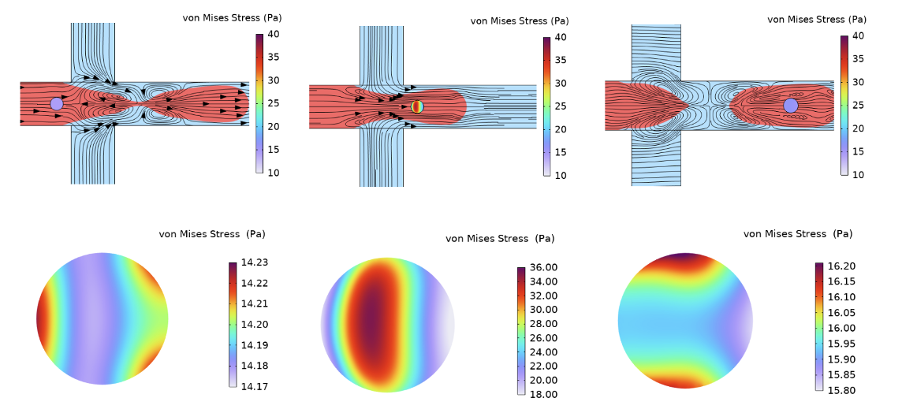
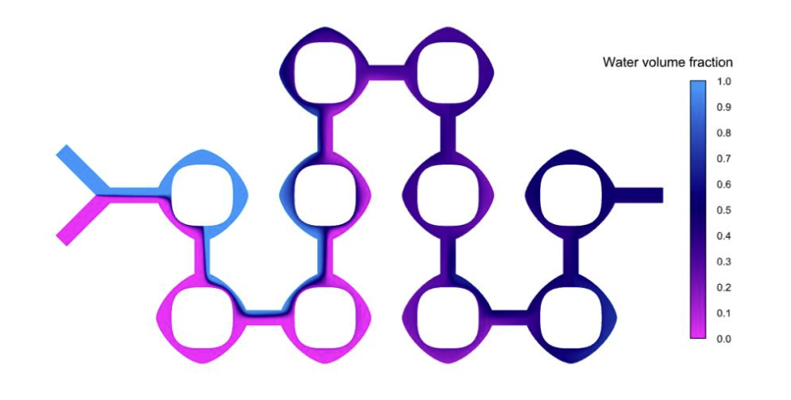
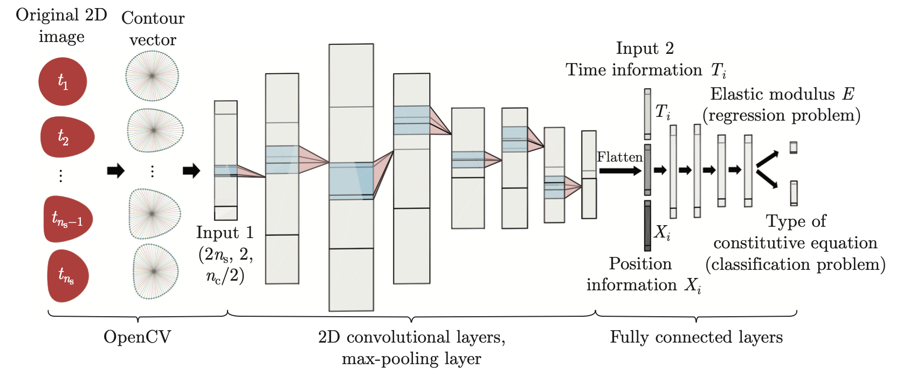
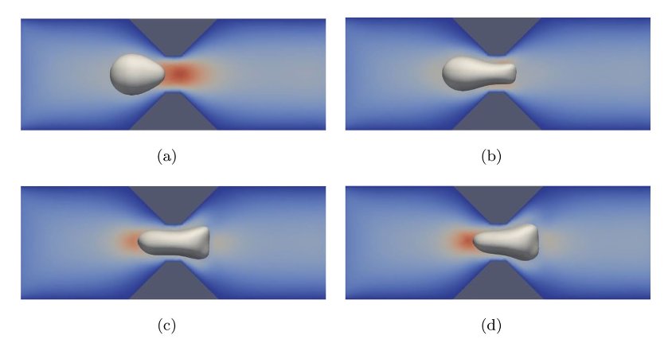
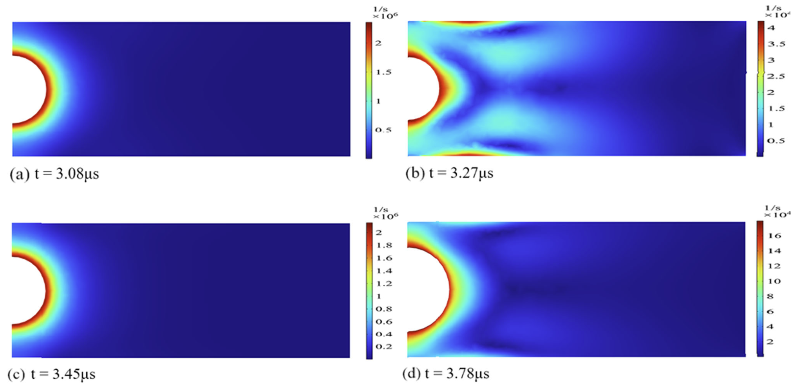

工作經驗與代表性科研成果
團隊在計算生物力學、AI 物理表型預測、微流控單細胞包裹、高通量納米藥物合成等領域發表的部分高水平期刊論文與项目成果。

微流控液滴中超彈性細胞的確定性包裹與流固耦合機制
構建了結合 Cahn-Hilliard 相場模型與 ALE 方法的數值計算框架，精細揭示了超彈性細胞在聚焦微流場中的流固耦合大變形規律，並提出了定量預測確定性液滴包裹的無量綱標度律。

超橢圓分叉微混合器助力脂質納米粒 (LNP) 高通量可控合成
利用慣性與二次渦流機制，設計并評估了超橢圓分叉結構的微混合器。數值模擬表明該結構能大幅提升多相超快混合效率，實現 mRNA-LNP 等納米藥物的高通量、粒徑可控合成。

基於深度學習的微通道單細胞力學特性高通量實時預測
結合 CFD 流体仿真数据与卷积神经网络（CNN），建立了由细胞穿过狭窄微通道动态形变直接反演其弹性模量与物理本构方程的 AI 预测框架，打破了传统单细胞力学测量低通量、高门槛的瓶颈。

漸變截面微通道內細胞擠壓形變與膜穿孔 (Gating) 機制
采用浸入有限元法（IFEM）对细胞/胶囊穿越渐变微通道时的流固耦合过程进行模拟，建立了定量评价细胞膜张力分布与胞内递送穿孔（Gating）区域的计算模型，为微流控细胞挤压递送芯片设计提供了理论指导。

穩態空化下緊密連接對血腦屏障 (BBB) 生物力學響應的影響
建立了結合 Yeoh 超彈性模型與黏彈性模型的血腦屏障 3D 有限元計算體系，解析了超聲聚焦微氣泡穩態空化載荷下腦血管內皮細胞及緊密連接 (TJ) 的破壞與可逆開放機制。